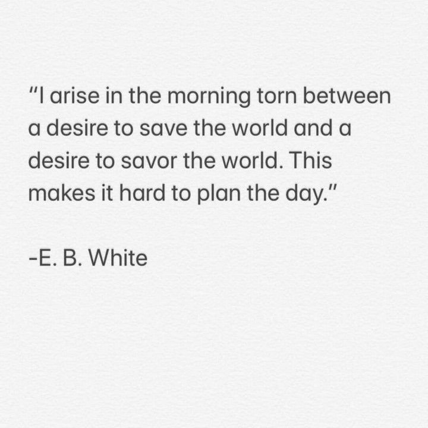

I said, “pitching myself to the people of India, as a candidate for the job of
Prime Minister of India”. The traditional Indian investor said, “I was too
delusional even for the most ambitious 30 year old”. I said, “That depends on
how you look at it. I have learned over the years that an ambition that is large, is
often perceived as delusional, if you are a friend. And if you are a client, then
illusional or too good to be true”. They both had a good laugh.
“I am mostly content pursuing my lofty goals as an entrepreneur. The only
reason I would like to be a prime minister one day is because I don’t want to let
anyone have the power to put anyone in jail without clear evidence against that
person for that crime. The recent threat of not fascisim as much as, the
normalisation of gross misuse of law, in India, is the greatest human rights
threat to the loud courageous voices among 130 crore people
among us. I want to be the prime minister who puts justice as his first in the list of priorities.
Then development. And then religion, if religion manages to endure
till 2050. Thereafter, the country can finally be free to say what it wills,
without the fear of being prosecuted for saying something they believe to be
true”. I know that is my last goal of working life and I am not scared to
mention it. I want to leave my work when I am satisfied with the level of
freedom a human feels in his day to day. And in that I observe, that men
languishing in prisons for no established crime, let alone, that it was done
by the accused, deserve 'freedom', the most. This change will be the start to the
genuine overhauling of the entire criminal justice system over the next 30 years
across the world. A prime minister of India has the power to do that.

If he doesn’t, I will.
So I can do so. I am starting Gencosys foundation. Here I will put together my
research and development essays. I need you to Imagine an energetic child in school, class 1. He has 12 years to learn, to
get to the next phase. I am right there in my goal to become a prime minister. I have
much to learn over the next 20 years. All I have acquired well is the intent and space where knowledge
happens. Now I will leave it for your criticisms and opinions to drive me forward
in my further enquiries in life. I thrive on it. Your opinions on politics and religion
is going to help me get more knowledge across the next 20 years of my life
about the fundamentals that will help humanity thrive by the time your children
become your current age . The best part is, I am, through this large goal,
opening myself to a new realm and I am glad I did so. I couldn’t have asked for
more purpose in life.
So far I have successfully imagined I believe the influence of social networks in
India when designed for talks, as against the influence of social networks in the
world when designed for evidence based productivity.
Implying, no one will be spoken hatefully publically about anyone without any
evidence against that person or belief. Twitter and Facebook are the places for
you if you choose to do that.
In 2020 we are in a mess of mythological stories presented as gods or religions
with no proof of either or. Just beliefs. Very special and dedicated attention
needs to be put to understanding life fundamentals before understanding
the dance upon it.
A great example is among the popular religions called Hinduism as the most
holy. Need I say more about what many Hindus must have done to have made
India so poor and unemployed, in spite of temples at every corner. Thank god
other religions like Islam and christianity have started to begin being called out
for their nonsense so by and large that I don't need to intervene. May that time
come for Hindus too. I think its coming.
The only religion practically possible to be practiced by a humble human being
is a religion of - curiosity about fundamentals behind movement of mi nd and stillness of mind. Vedic age was about that first, not temples and mass rituals. Just stillness and
movement of smallest common particles the
whole universe is geometrically aligned with. And thewhy? To know this
why, that stillness called Samadhi is very important.
Such is the kind of social community I wish to build. A community of
curiosity, not religions".
Along the way you will figure out the abstracts of how we are extrapolating our mission by laying the foundation for the new education and criminal justice system. This is my end game. Preseed is the incubator to incubate that plan of mine, just as it would do for you too, if you have also got something conscious and inspiring.
* I feel deeply about the empowerment of mothers. They are mostly home makers dependent on the income brought by the husbands. I want to change that. I envisioned SFI as that product during my stay back at home with my parents. this vision with a potential great food tech startup like Hola Chef, for I believe, if. vision of SFI can scale Hola Chef globally. It was during my research in matters of feminism that I came to two conclusions: 1. Mothers needs to be empowered financially. 2. Women-centric gender biased laws, be allowed to remain women centric gender biased.
His words have a cathartic effect on us, in this world of agyan. Perhaps for he is able to fragment everything to its points of origin. Even god. He takes away the mysticism from mysticism.
Through our foundation:
1. We want to ensure that his words take an essay format on Medium.com.
Nishchal has invested himself totally in walking his talk through www.preseed.in. While we think the words and vibe with which he is building www.preseed.in needs to also be written into a book, for his words can even change the world one day.
It is his essays we intend to draft into a book, that can change India, if millions of you read, by 2025.
We will curate and make public on Nishchal's social media pages, information that will aid in the making of Preseed Essays.
"On Preseed Essays, among expressions of my own altruistic tech product, I am looking to tackle problems of isms like:
1. fascism like divisive nationalism,
2. patriarchy and the radical side of feminism*, the divisive feminism, which is often also called feminazism,
3. divisive communalism/groupisms,
4. illogical communism,
5. and other isms like mindless consumerism that have the potential to divide the world further".
You must feel free to comment and participate on :
1 - Fb page
2 - Twitter
3 - Preseed Essays
4. YouTube

A little contribution from you would go a long way into sponsoring Nishchal's daily writing and curation effort towards those who will read his words on his awakened journey forward. We need your donation for this at first. We need your donation for Preseed Essays where we organise Nishchal's own videos along with some of the world's best in a relevant order to complete a very important narrative for you.
Your monetary support will enable us to eat food, pay rent/electricity/internet/phone bills, and touch many more people with TRUTH, daily, in turn through Preseed Essays, Nishchal's Facebook and Tumblr blogs, and Youtube videos on his Youtube channel called Preseed Admin until COVID-19 goes. You can find the link to all this on his website www.preseed.in.
Nishchal's blog, Preseed Essays, is my new big picture, because the politics of appeasement has not only affected society but the formation of laws as well.
For everything else about Nishchal, visit his website — www.preseed.in.
Although Nishchal is beyond honor and dishonor. He says, "the desire for honor often creates fear in the fight for truth."
🇮🇳 Watch this video and read its description on Youtube to get the taste of who we are and how far we are willing to go. The detailed perspective Nishchal has on every matter contained in this video (and more) can be read about in, Preseed essays on Medium.
On #Education & #Productivity reforms, Nishchal has done a lot of novel work in, silently, already. In #JudicialSystem #PoliceReforms #Democracy #religion he is still enquiring from a place of an atheist who values tech-oriented future more than a myth induced history. He is an atheist who is not afraid to call a spade a spade, and a flake a flake. When he learns the truth, he is not afraid to call you out on your shit in such times of victimhood and judgment, where a man with no voice is appreciated among citizens, friends, and family more than a man with the voice of critical intelligence. Till our tech products are built to his satisfaction, Preseed Essays is his gift to the children of the same friends & family. Make sure your children dig through each word on Preseed websites & essays if you care about inducing in them, #courage & #compassion through #science & #truth as much as you have cared about education through degrees and your parents have cared about politics through dogmas. Temples, mosques, churches, and religions generally, at least the way they are projected now, are not the solutions, or say, were solutions once perhaps, that are now completely destroyed by the current political narrative in most parts of the world. The net result of his essays and products we hope leads to, some contribution towards the inevitable death of most ists/isms, ideologies and religions of the past - making way for just simple #meditation, with new seeming contradictions; wishfully the only remaining isms - science/tech-ism & #minimalism, simultaneously. All this because, Nishchal is solving a personal problem, but sincerely enough, that the solution may impact the whole world someday. The reward for genuine sincerity, often, is such.
Through my essays, I want to bring more clarity to the public conversation on what’s really happening in the world. Too much of the public discussion is focused either on the wrong issues stemming from the past or is extremely confused to every get to discuss the future that science fiction has always revealed is coming. People are flooded by enormous amounts of repetitive information of past, which they don’t know how to make sense of, so they just do what the herd does, follow each other, blindly, and mostly in surrender to their egos. I see my mission as bringing clarity to the public discussion especially in terms of focusing people’s attention on the most important questions that will confront us in 5 years. Question and not answers, for I don’t have all the answers. The important thing is, to agree about the questions. For questions will set the tone of our discourse for the sake of a better future. I would end by saying that there are 10 big challenges to humankind in the 21st century- the nuclear war, climate change, technological disruption, pathetic criminal justice system, selfish capitalism or mindless consumerism, representative democracy, media accountability, no universal basic income, parenting, and education system. These should be the first 10 items on the political agenda of every country. If I have to mention one more it would be — finding happiness or at least tranquility amidst these disasters, through Yog. My essays are about these.
I have added my own videos from my Youtube channel too in these essays at the right places so as to put my things in perspective and I have requested you to even read the descriptions on youtube of each video from me as I describe matters beyond the respective video there. In totality, my effort on this essay are made up of about 60000+ words. So, if you go through them you will go through, say, 12+ Chapters worth of reading to understand, how serious we are about changing the world around you — through the culmination of it all into codes to make that change as is expressed in the essays. If you can finish a small book of 12 chapters in 1 week, amidst your busy schedule, you can finish this too in one week.